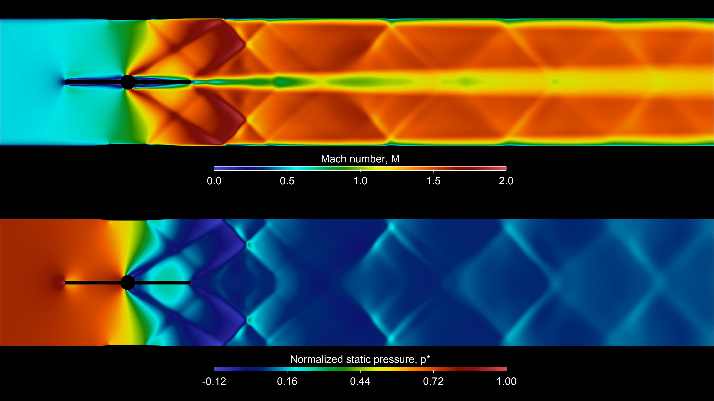

Mesh generation
Watertight Geometry with specified surface sizes, smooth-transition boundary layers and poly-hexcore volume meshing. The WFT reference records the selected settings.
COMPRESSIBLE FLOW / GENERIC EXAMPLE
CFD analysis of airflow across valve openings and pressure conditions, with Python automation for meshing and solver setup.
The geometry and results shown are generic demonstrations of methods and skills. They do not represent any specific customer or production component.

Alberto Brambila, PhD · Compressible-flow modeling, operating-point characterization and PyFluent automation.
ENGINEERING METHOD
Valve opening and pressure conditions establish each comparison.
Compressible modeling captures acceleration and density variation.
Check mass flow, pressure datum, measurement locations and convergence.
The professional work covered WOT and partial openings for naturally aspirated and turbocharged applications. The public image is a generic illustration, not an industrial operating map.
01 / ENGINEERING CONTEXT
A throttle needs predictable mass flow across its operating range. Opening angle and pressure conditions have to be considered together.
The work covered wide-open throttle (WOT) and partial openings for naturally aspirated and turbocharged applications. CFD workflows supported mass-flow characterization, comparison with flow-bench measurements and delivery of flow curves for engineering use.
The transferable part is the method: define an operating matrix, use consistent pressure and angle conventions, and check each point before interpreting the curve.
This case shows a generic flow visualization and a configurable mesh/setup workflow. The actual components, their operating maps and test data are not published.
The public script represents one configurable setup. It does not include an automatic multi-angle geometry sweep, and the image’s exact angle and pressure pair are not inferred from its defaults.
02 / FLOW INTERPRETATION
The two panels describe the same type of engineering question from different quantities: where the gas accelerates and how static pressure varies through the restriction.
The upper panel shows acceleration around the plate and a downstream jet with local supersonic regions. The compression and expansion pattern is a reason to resolve density and energy rather than assume constant-density flow.
The color scale is not a substitute for a reported maximum or a complete performance map.
The lower panel relates local static pressure to inlet and outlet reference values. Negative normalized values indicate pressure below the chosen outlet reference; they do not imply negative absolute pressure.
Normalization makes the pattern readable without disclosing an industrial pressure condition. It does not establish that different operating points have the same flow behavior.
For characterization, combine the field view with mass flow, pressure definitions, valve opening and convergence evidence for each operating point. This image alone does not demonstrate validation or an optimized component.
03 / REUSABLE WORKFLOW
Two Python drivers keep model configuration readable and make repeated setup less dependent on manual Fluent sessions.
Watertight Geometry with specified surface sizes, smooth-transition boundary layers and poly-hexcore volume meshing. The WFT reference records the selected settings.
Steady density-based implicit solver, energy, ideal-gas air, Sutherland viscosity and k–ω SST. Named expressions define pressure conditions; measurement planes support the reports.
The setup driver creates surfaces and base reports before compound expressions. Separate setup, run and all modes preserve the documented initialization and iteration procedure.
Earlier development notes record matching reference/rebuilt mesh counts and individual solver API checks. Equal counts do not establish mesh independence, and a complete converged 2,500-iteration run was not demonstrated. No solver was run for this publication.
CAD and meshes are excluded and must be supplied locally. The documentation identifies checks still needed for operating pressure, measurement-plane placement and report validity. The cd_a expression is an equivalent area in m², not a dimensionless discharge coefficient or a general compressible-flow correction.
04 / TRANSFERABLE SKILLS
The same analysis methods can support valves, restrictions, air paths and gas-delivery systems, with model choices and validation adapted to each application.
Relate acceleration, density change and pressure recovery to the quantities an engineer needs.
Flow interpretation ↑Structure pressure/opening studies and compare CFD with test-bench quantities using consistent definitions.
Study context ↑Build reusable mesh and setup drivers, with explicit report dependencies and local prerequisites.
Workflow ↑Implementation files and detailed configurations are maintained privately. This page presents the engineering approach and selected evidence.